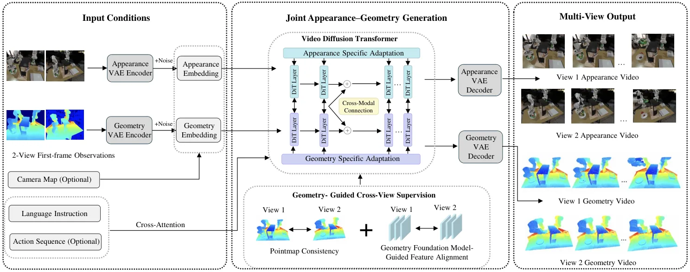
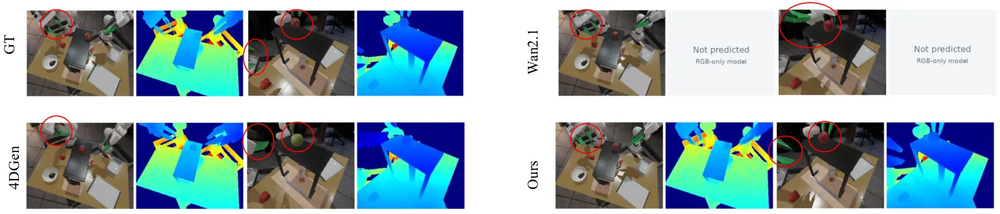
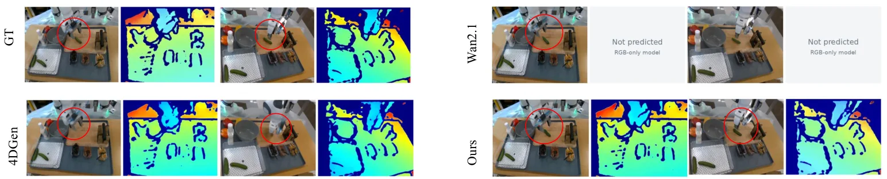

GeoMVGen：机械臂操作场景下外观与几何联合的多视图视频生成
GeoMVGen: Joint Appearance-Geometry Modeling for Multi-View Video Generation in Robotic Manipulation
一句话：把「RGB 潜变量」和「点图潜变量」并排塞进同一条 Wan2.1 骨干，用模态特定 LoRA 分开适应、用零初始化残差互相看一眼，再用「真值投影得到的跨视角对应」同时约束 3D 坐标与 VGGT-Ω 特征。
FVD
CD
AbsRel
ADE
作者、单位与技术谱系 · Research context
作者与单位
研究脉络
- 4DGen（Geometry-aware 4D video generation for robot manipulation, ICLR 2026）方法上游（直接前作与数据来源）关系：数据与任务设定继承：本篇使用 4DGen 的 4D 生成数据集与「多视图 RGB + 点图」任务形式，并把 4DGen 作为最强对照。[本文 §2 与 §4.1]
- TesserAct / 4DNeX（联合外观-几何生成）方法上游关系：问题承接：这些工作证明 RGB 与几何可以联合生成，但缺少跨视角一致性约束，本篇补上这一层。[本文 §2]
- One4D / UniVidX（模态特定适配与跨模态交换）方法上游（机制来源）关系：机制借用：模态特定 LoRA 与跨模态信息交换的设计思路来自这两条线，本篇把它落到「RGB vs 点图」这一对模态上。[本文 §1 与 §3.2]
- Geometry Forcing / VGGT-Ω（特征层对齐）方法上游（监督来源）关系：技术依赖：冻结 VGGT-Ω 作为几何感知特征提取器，做跨视角特征对齐；Geometry Forcing 是把扩散特征与几何表征对齐的先行工作，本篇将其作为对照。[本文 §2 与 §3.3]
合作网络
- Huawei Noah's Ark Lab 署名关系Qiaoqiao Jia / Guile Wu / Dongfeng Bai → Huawei Noah's Ark Lab关系：共同署名与同一署名单位[arXiv 官方 HTML]
- MoVieDrive（CVPR 2026 Findings）共同署名Guile Wu / Dongfeng Bai → MoVieDrive: urban scene synthesis with multi-modal multi-view video diffusion transformer关系：共同署名（团队前作，本论文参考文献 [23]）[本文参考文献 [23]]
- 与 University of Waterloo 的关联Qiaoqiao Jia → University of Waterloo关系：署名单位 + 实习说明[arXiv 官方 HTML]
作者、单位、实习说明与共同署名均取自论文首页与参考文献，可核验；未发现与 4DGen 作者的公开合作边，故只记技术/数据依赖，不写合作关系。
方法本质拆解 · What actually changed
是不是微调？
是 LoRA 微调 + 新头训练，不是从头训：Wan2.1 的 DiT 权重冻结并被两路共享，只训练每路模态特定的 LoRA（r=α=64，B 零初始化）、零初始化的跨模态投影 C^ℓ、动作/相机条件投影以及解码头；损失是两路潜空间流匹配损失加两项跨视图监督（λ_point(k)、λ_feat(k) 随步数 warmup 并做 detached 幅度重标定）。
有没有额外约束？
约束分三层：输入层用 9 通道 Plücker 相机图（通道拼接到 latent 再 patch embed）与 20 维动作向量（零填充到固定长度拼到文本上下文尾部）提供空间与动作条件；输出层用跨视角点图一致性（有效性 × 软可见性 × 前景加权的平滑 L1）约束 3D 坐标；特征层用冻结 VGGT-Ω 的余弦距离约束几何自洽，并额外剔除深度不连续处。三条路径都只在训练期用到真值投影，推理不需要。
推理/后端到底做了什么？
推理仍是扩散采样：给定两视角初始 RGB/点图、语言指令与可选动作/相机条件，双流联合去噪出未来 RGB 与点图序列，没有任何测试时优化或几何后处理；跨视图投影与真值只在训练损失里出现。动作与相机条件可分别或联合 dropout，因此缺动作时也能生成，但缺动作时的可用性论文未单独量化。
方法本质是什么？
本质是把「几何一致性」从注意力里的隐式倾向，变成输出坐标与冻结几何模型特征上的两道显式监督，同时用「共享骨干 + 模态特定 LoRA + 零初始化残差」保住预训练外观先验。它没有换骨干、也没有加显式 3D 表示或可微渲染，几何能力的上限仍受 Wan2.1 与点图 token 分辨率约束。
输入两视角初始 RGB/点图 + 指令（可选动作、相机），用 Wan2.1 双流扩散联合去噪未来 RGB 与点图，训练时靠真值投影的坐标一致性与 VGGT-Ω 特征对齐两道监督拉齐跨视角。

结论与问题Conclusion & Motivation
核心结论
GeoMVGen 的结论是：在机械臂操作的多相机场景里，把「未来 RGB」和「未来点图」放在同一条视频扩散骨干里联合生成，比只生成 RGB 再外挂几何模型更能保证跨视角一致。它的做法是在 Wan2.1 上做双流：两路潜变量共享同一个 DiT，但各自有模态特定的 LoRA（r=α=64），并在若干 block 后用零初始化的双向残差互相注入特征；跨视图一致性则靠两道互补监督——用真值几何与标定做跨视角投影后，一路直接约束对应 3D 点（含软可见性权重与前景加权），另一路约束冻结 VGGT-Ω 提取的特征余弦距离。数字上在仿真与真实两套机械臂数据上全面领先：仿真 FVD 480.2 对 4DGen 648.9、Chamfer 0.013 对 0.029，真实 FVD 259.1 对 457.5。作者也承认跨视图监督会带来指标 trade-off（联合监督的 AbsRel 0.051 反而高于仅特征对齐的 0.045）。
动机与问题
机械臂操作要求预测「机器人-物体交互」的演化，这同时是外观问题与几何问题：只生成看起来合理的 RGB，可能把物体颜色或位姿编错，下游策略学到的就不是可用信息。多相机又加了第二层要求——同一场景在两个视角下必须是同一套几何，否则跨视角动作推理会自相矛盾。现有路线各有缺口：通用视频生成（Wan2.1、SVD）外观强但无几何；联合外观-几何方法（TesserAct、4DNeX）多在单视图上做，跨视角一致性没有显式约束；多视图生成（4DGen、MVISTA-4D）虽然同时出 RGB 与几何，但几何一致性主要靠注意力或对齐损失，缺少「输出坐标层 + 特征层」的双重约束。待解问题因此是：如何在不大改骨干的前提下，让外观流与几何流既保持各自特性、又在输出和特征两个层面被跨视角一致性拉齐。
方法Method
方法总览
输入是两个视角的初始 RGB 与点图 {(I0^v, P0^v)}、语言指令 l，以及可选的动作序列 a 与相机参数 c；输出是未来 T 步的两视角 RGB 与点图序列。RGB 与点图分别编码成独立潜变量流，进入同一条视频扩散 transformer（Wan2.1）；每一路用模态特定 LoRA 适配，若干 DiT block 之后通过零初始化的双向跨模态残差交换特征。跨视图一致性由两个损失保证：点图一致性把源视角像素用真值几何+标定投影到目标视角，比对预测点并与双线性采样的目标预测比较；特征对齐则把解码出的 RGB 送进冻结 VGGT-Ω 编码器，在同样投影位置比对特征余弦距离。条件注入分两路：动作（20 维末端位姿/6D 旋转/夹爪）走 cross-attention 接到文本上下文尾部，相机（9 通道 Plücker 射线 + 矩 + 中心）按通道拼到两路 latent 上再 patch embed；训练时对动作/相机/文本做独立与联合 dropout，推理时可灵活缺省。
关键技术细节
四个细节决定了它能不能跑通。第一，模态适配是「冻结共享权重 + 模态特定低秩」：f_m(h)=Wh+b+(α/r)B_mA_mh，B_m 零初始化，因此训练起点等价于原始 Wan2.1，不会一上来就把预训练表征破坏。第二，跨模态残差是双向且零初始化的线性投影 C^ℓ（无 bias、跨 token 与视角共享），保证信息交换是「逐渐学出来的」而不是硬耦合。第三，点图一致性的权重由三项相乘：有效性掩码 M（排除无效几何、非正深度、投出画面）、软可见性 v=exp(−|Δz|/τ)（用真值深度差衰减遮挡处对应）、前景加权 g=1+(γ−1)·1[前景]（前景由 RGB 差与 3D 距离的运动区域并集 + 膨胀得到），最后用场景尺度归一化的 smooth L1 计算；对应坐标与权重全部 detach，只在训练期使用。第四，特征对齐复用同一套投影，但额外剔除 |Δz|>τ 与深度不连续处，用余弦距离 1−cos(F_i,F_j)；梯度会穿过冻结 VGGT-Ω 回到生成的 RGB，因此它约束的是「生成图是否几何自洽」，而不是让编码器去拟合。

实验Experiments
实验设置
数据是 4DGen 的 4D 视频生成数据集：三个仿真任务 + 四个真实任务，每个样本含两个同步视角。仿真任务用 12 个相机视角训练、4 个留出视角评测（考察新视角泛化），真实任务用两台固定相机、同 40 个 episode 训练与评测（域内生成）。指标分三组：RGB 视频质量用 FVD（参考视角 n 与副视角 m 各报一次）；深度精度用 AbsRel 与 δ1；跨视图一致性用 Chamfer Distance（米，衡量两视角点云几何一致性）与 mIoU（跨视角夹爪对齐）。对照三类方法：通用视频生成（Wan2.1、SVD）、联合外观-几何（TesserAct、4DGen）、几何基础模型引导（Geometry Forcing）；所有方法在同一批 clip 与相机对上评测。消融在单任务（PlaceAppleFromBowlIntoBin）上以 1000 步训练完成，作者说明是算力所限但组内设置一致。
实验数字与比较
仿真（表 1，三任务平均）：FVD 480.2 / 486.5（参考/副视角），Wan2.1 530.0/560.6、4DGen 648.9/636.6、TesserAct 724.4/713.1、Geometry Forcing 1107.8/1094.1；AbsRel 0.051/0.049 对 4DGen 0.076/0.087；δ1 0.957/0.960 对 0.935/0.934；Chamfer 0.013 对 0.029，mIoU 0.530 对 0.496。真实（表 2）：FVD 259.1/258.4 对 4DGen 457.5/475.3；AbsRel 0.027/0.024 对 0.065/0.056；Chamfer 0.011 对 0.028；mIoU 0.461 对 0.452。夹爪轨迹（图 5，SAM2 跟踪十帧）：ADE 29.55 像素、FDE 40.55 像素，相对最强基线 4DGen 分别降 0.97% 与 0.61%。消融（表 3）：无模态适配、无跨模态残差时 FVD 663.3、mIoU 0.473；两者都开 FVD 566.0、mIoU 0.504。跨视图监督（表 4）：无监督 FVD 550.0、CD 0.0163、mIoU 0.496；点图一致性 FVD 532.4、mIoU 0.508；特征对齐 FVD 527.7、AbsRel 0.045；联合 FVD 506.7、CD 0.0159。
消融/失败边界
表 3 的结构很干净：只加跨模态残差（不加模态适配）就能把 FVD 从 663.3 降到 587.4、mIoU 从 0.473 升到 0.494；只加模态适配是 643.2/0.485；两者都加是 566.0/0.504。也就是说「信息交换」比「表征分离」贡献更大，但两者互补。表 4 暴露了真正的边界：联合监督拿到最低 FVD（506.7）与最低 CD（0.0159），但 AbsRel 从「仅特征对齐」的 0.045 升到 0.051，δ1 在四组里始终 0.960 不动——说明两项监督在你追我赶地互相拉扯，深度精度并没有被系统性改善；单独用点图一致性时 mIoU 最高（0.508），联合后反而降到 0.501。夹爪轨迹只降 0.97%/0.61%，进一步说明「FVD/Chamfer 的提升」不等于「任务相关运动更准」。失败边界还包括：仿真只留出 4 个相机视角、真实只有两台固定相机且训练=评测同一批 40 个 episode，跨场景泛化未验证。
局限与迁移Limitations & Transfer
局限与待核验
作者没有单列 limitations 章节，但从实验范围可读出边界；以下区分「原文可确认」与「我们的待核验」。原文可确认：只在两视图、4DGen 数据集的 3 仿真 + 4 真实任务上评测；真实任务训练与评测共用同 40 个 episode；消融只在单任务 1000 步上做；指标里 δ1 在所有消融配置恒为 0.960，说明该指标对改动不敏感。待核验：第一，推理延迟、显存与采样步数完全没有报告，而双流 + 冻结 VGGT-Ω 特征监督意味着训练成本显著高于单流基线，能否在线用于策略闭环未知；第二，相机条件支持「不同相机位姿」，但腕部相机随机械臂运动的情形只在文字里提到，实验用的是固定外参相机，动相机下的表现待测；第三，跨视图一致性依赖真值几何与标定做投影，真实部署时若只有近似标定或动态遮挡，权重设计是否仍成立需要验证；第四，未给出代码或权重链接。
与你研究路线的关系
这篇对我们的价值在「监督信号怎么构造」而不是生成质量。其一，把「真值几何 + 标定」变成跨视角对应，再在输出坐标层与冻结几何模型特征层各下一道监督，是一种低成本的两级一致性设计；我们做多传感器外参标定或点云配准时，同样可以用「输出层残差 + 特征层余弦」双重约束来防止只对齐了坐标却丢了结构。其二，软可见性权重 v=exp(−|Δz|/τ) 与前景加权 g 的组合，是把「遮挡不确定」和「任务相关区域」分开表达的干净写法，可以直接搬到我们动态场景的点云一致性损失里。其三，模态特定 LoRA + 零初始化跨模态残差，是「共享骨干、分离表征、渐进耦合」这一模式的现成实现，适合我们「学习型几何先验 + 几何优化」联合训练时防止两路互相污染。下一步最小实验：在我们已有的双相机/双传感器序列上，固定骨干，只切换「是否加特征层对齐」，比较跨视角重投影残差与几何一致性，验证第二道监督是否带来超出坐标层约束的收益。

